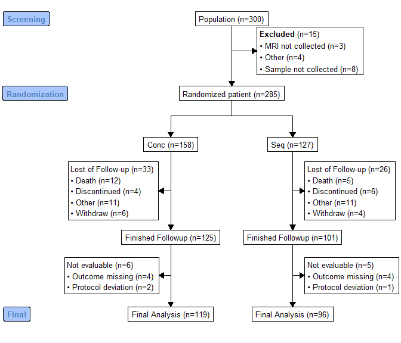

The goal of consort is to make it easy to create CONSORT diagrams for the transparent reporting of participant allocation in randomized, controlled clinical trials. This is done by creating a standardized disposition data, and using this data as the source for the creation a standard CONSORT diagram. Human effort by supplying text labels on the node can also be achieved.
Installation
You can install the released version of consort from CRAN with:
install.packages("consort")And the development version from GitHub with:
# install.packages("devtools")
devtools::install_github("adayim/consort")Example
This is a basic example which shows you how to solve a create CONSORT diagram with a given subject disposition data:
set.seed(1001)
N <- 300
trialno <- sample(c(1000:2000), N)
exc <- rep(NA, N)
exc[sample(1:N, 15)] <- sample(c("Sample not collected", "MRI not collected", "Other"),
15, replace = T, prob = c(0.4, 0.4, 0.2))
arm <- rep(NA, N)
arm[is.na(exc)] <- sample(c("Conc", "Seq"), sum(is.na(exc)), replace = T)
fow1 <- rep(NA, N)
fow1[!is.na(arm)] <- sample(c("Withdraw", "Discontinued", "Death", "Other", NA),
sum(!is.na(arm)), replace = T,
prob = c(0.05, 0.05, 0.05, 0.05, 0.8))
fow2 <- rep(NA, N)
fow2[!is.na(arm) & is.na(fow1)] <- sample(c("Protocol deviation", "Outcome missing", NA),
sum(!is.na(arm) & is.na(fow1)), replace = T,
prob = c(0.05, 0.05, 0.9))
df <- data.frame(trialno, exc, arm, fow1, fow2)
head(df)
#> trialno exc arm fow1 fow2
#> 1 1086 <NA> Conc <NA> <NA>
#> 2 1418 <NA> Seq <NA> <NA>
#> 3 1502 <NA> Conc Death <NA>
#> 4 1846 <NA> Conc <NA> <NA>
#> 5 1303 <NA> Conc Death <NA>
#> 6 1838 <NA> Seq <NA> <NA>
set_consort_defaults(txt_gp = gpar(cex = 0.6), parse_markup = TRUE)
out <- consort_plot(data = df,
order = c(trialno = "Population",
exc = "**Excluded**",
arm = "Randomized patient",
fow1 = "Lost of Follow-up",
trialno = "Finished Followup",
fow2 = "Not evaluable",
trialno = "Final Analysis"),
side_box = c("exc", "fow1", "fow2"),
allocation = "arm",
labels = c("1" = "Screening", "2" = "Randomization",
"5" = "Final"))
plot(out)
As the grid plotting is not very ideal, calculation of the coodinates for the nodes are not easy job and tried my best. Feel free to PR if you want to improve. Or you can produce Graphviz plot by setting grViz = TRUE in plot. This will use DiagrammeR to print the plot. The plot is ideal for Shiny or HTML output.
plot(out, grViz = TRUE)Or save this Graphviz plot to png or pdf